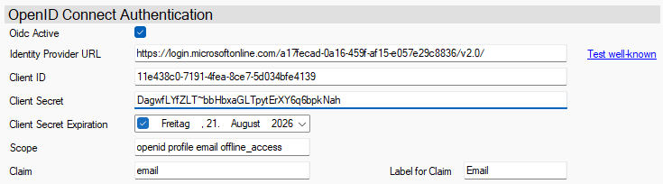

OpenID Connect mit Microsoft Entra ID
Microsoft Entra ID unterstützt OpenID Connect (OIDC) vollständig und wird häufig zur Authentifizierung von Benutzern in Webanwendungen, mobilen Apps und APIs verwendet. OIDC baut auf OAuth 2.0 auf und ermöglicht es Clients, die Identität des Benutzers anhand von Entra ID ausgestellten Tokens zu verifizieren.
Das folgende Bild zeigt beispielhaft die Konfiguration eines Authentication-Service für Microsoft Entra ID:

Einrichtung
Anwendung registrieren
Gehen Sie zu Microsoft Entra Admin Center → „App-Registrierungen“
Klicken Sie auf „Neue Registrierung“.
Füllen Sie die Felder aus:
Name: Ein beliebiger Name
Unterstützte Kontotypen: Meist "Nur Konten in diesem Organisationsverzeichnis"
Umleitungs-URI (Redirect URI): https://localhost/login-callback
Klicken Sie auf Registrieren.
Detaillierte Anleitung: Anwendung registrieren (Microsoft-Dokumentation)
Wichtige Einstellungen
Client-ID und Mandanten-ID
- Nach der Registrierung finden Sie unter „Übersicht“:
- Anwendungs-ID (Client-ID)
- Verzeichnis-ID (Mandanten-ID)
Diese werden für die OIDC-Konfiguration benötigt.
Client-Secret
- Gehen Sie zu „Zertifikate & Geheimnisse“
- Klicken Sie auf „Neues Geheimnis“
- Vergeben Sie eine Beschreibung und ein Ablaufdatum
- Das Secret muss kopiert und gesichert abgespeichert werden!
Detaillierte Anleitung: Client-Secret hinzufügen
Relevante Hinweise
Bei unseren Tests sind uns einige Eigenheiten und Probleme, auf die man stoßen kann, aufgefallen.
IdP URL
Microsoft bietet für OIDC zwei verschiedene Versionen / Endpoints an, welche jeweils einen anderen Funktionalitätsumfang bieten.
Wenn Sie mit Refresh-Tokens arbeiten wollen, nutzen Sie für die Einrichtung als IdP URL https://login.microsoftonline.com/{tenant-id}/v2.0/.
Ersetzen Sie hierbei {tenant-id} durch Ihre Mandanten-ID.
Der alte Legacy Endpoint nutzt folgende IdP-URL: https://login.microsoftonline.com/{tenant-id}/.
Note
Sowohl Microsoft als auch wir, empfehlen, den v2.0-Endpoint zu nutzen.
Claims
Bei den Claims gibt es zwischen den Endpoints ebenfalls Unterschiede.
- Bei Nutzung des
v2.0-Endpoints muss für die Email der Scopeemailangegeben werden. - Bei Nutzung des Legacy-Endpoints muss für die Email der Scope
upnangegeben werden.
Scopes
Wenn Sie Refresh-Token nutzen wollen, ist es bei den Scopes wichtig zu beachten, dass der Scope offline_access angegeben wird.
Wir empfehlen generell die Scopes openid profile email offline_access zu nutzen.
Important
Refresh-Tokens funktionieren nur mit dem v2.0-Endpoint in Verbindung mit dem Scope offline_access.
Weiterführende Links
Weiterführende Links